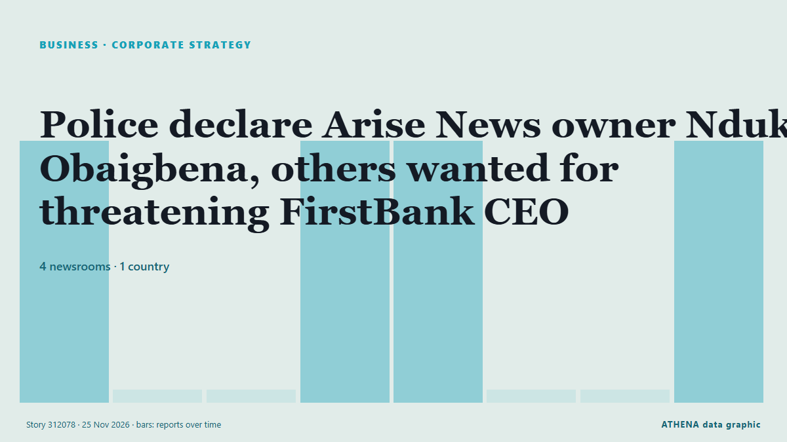

Corporate strategy
SponsoredPresented by  Cybernetics and Artificial Intelligence Lab Welcome to the Cybernetics and Artificial Intelligence Laboratory, established at the Department of Business Administration of the National and Kapodistrian University of Athens. The lab is headed by Professor Dimitrios Thomakos. The lab aims to do research that can be published in top venues. Our research uses tools and methods of Artificial Intelligence, and lies in the following areas: - Forecasting - Decision making - Cyber security - Finance We are always looking forward to collaborating with exceptional students!
Cybernetics and Artificial Intelligence Lab Welcome to the Cybernetics and Artificial Intelligence Laboratory, established at the Department of Business Administration of the National and Kapodistrian University of Athens. The lab is headed by Professor Dimitrios Thomakos. The lab aims to do research that can be published in top venues. Our research uses tools and methods of Artificial Intelligence, and lies in the following areas: - Forecasting - Decision making - Cyber security - Finance We are always looking forward to collaborating with exceptional students!
| 12 Nov | 0 |
|---|---|
| 13 Nov | 0 |
| 14 Nov | 0 |
| 15 Nov | 0 |
| 16 Nov | 0 |
| 17 Nov | 0 |
| 18 Nov | 0 |
| 19 Nov | 2 |
| 20 Nov | 0 |
| 21 Nov | 6 |
| 22 Nov | 4 |
| 23 Nov | 3 |
| 24 Nov | 6 |
| 25 Nov | 2 |

Police declare Arise News owner Nduka Obaigbena, others wanted for threatening FirstBank CEO
Mr Nduka Obaigbena claimed he did not receive an invitation concerning any investigation from the police or any law enforcement agency at any of his addresses. from Peoples Gazette
Dell lifts annual forecasts after record quarter on surging AI server demand
For fiscal 2027, Dell now expects revenue of US$202 billion, above its prior target of US$192 billion. from The Business Times
CFTC sets new prediction market rules as more firms seek US entry
The US regulator has approved permanent reporting rules for certain event contracts as more companies look to launch prediction markets. from Cointelegraph
Google will make AI agents use new gateways to reach Gmail and Drive
Google has made its Workspace MCP servers and CLI generally available and says AI agents must use them instead of existing REST APIs from February 1, 2027. from The Next Web
HPE expects memory shortages to last into 2028 as networking takes on a bigger profit role
Hewlett Packard Enterprise (HPE) expects the tight supply of memory and other components that lifted its server prices this year to persist well beyond the coming fiscal year, a shift management says… from DigiTimes Asia
Smuggling undermines pulses and oilseeds exports, association warns
Cross-border smuggling is undermining Ethiopia’s formal pulses and oilseeds exports, the Ethiopian Pulses and Oilseeds Exporters Association has warned, calling for stronger enforcement alongside… from Capital Ethiopia
Costa Concordia Captain Released from Prison After Nine Years
Francesco Schettino, the former captain of the Costa Concordia cruise ship that capsized off Italy in 2012, killing 32 people, has been released from prison after more than nine years... from gCaptain
Anne O'Connor to 'vigorously' challenge her 'profoundly flawed' removal as HSE CEO
Ms O'Connor said she is 'deeply surprised and disappointed' by the 'abrupt' manner of the decision. from Irish Examiner
Sayyid Theyazin inaugurates IFC Oman headquarters
MUSCAT: HH Sayyid Theyazin bin Haitham al Said, Deputy Prime Minister for Economic Affairs, opened the headquarters of the International Financial Centre of Oman at Al Mouj Busine... from Oman Observer
Google to shut down Nest app, Google Assistant on smart home devices in 2027
Google is announcing some significant changes to its smart home software. from The Verge
Russia and Iran Exploring Expanded Cooperation in Mining, Industry and Technology
Addis Ababa, November 24, 2026 (FMC) – Russia and Iran are seeking to expand industrial and trade cooperation, with mining emerging as one of the promising areas of partnership alongside… from Fana Broadcasting Corporate
Russia's Wildberries CEO Steps Down Days After EU Sanctions, Media Report
Nov 21 - Tatyana Kim, the head of Russia's largest online retailer Wildberries, has stepped down, Russian media reported on Saturday, days after the European Union added her to its Russia sanctions… from The Straits Times
India vs New Zealand 1st Test: Six talking points from Wellington as Bumrah, Rahul and Pant shine
India dominated the first Test against New Zealand in Wellington but settled for a draw. from Sportstar
Shashi Tharoor tries GTA 6 for the first time, says ‘Grand theft, yeah, but auto?’
Shashi Tharoor admitted that neither the setting nor the characters in GTA 6 appealed to him. from Hindustan Times
Kalshi's 30-year-old founder built $40bn giant; now faces US gambling law battle
Luana Lopes Lara, 30, became the world's youngest self-made female billionaire after co-founding Kalshi with Tarek Mansour in 2021. from Times of India (World)
Turkey freezes assets of 108 people in fund scandal: report
Prosecutors investigating Turkey's investment fund crisis have frozen the assets of 108 people who each earned over $2 million in profits through trading. from The New Arab
DHL Supply Chain sees 12% year-on-year sustainable revenue growth as companies transform their global supply chains
Asia Pacific records 9.9% year-on-year revenue growth in Q3 2026 and is expected to account for approximately 20% of 2026 Total Contract Value New investments across Australia, India, Japan, the… from Laotian Times
Wonder explores sale of delivery service Grubhub: report
Wonder, started by e-commerce entrepreneur Marc Lore, acquired Grubhub in 2024 for US$150 million. from The Business Times